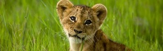

An African lion cub rests in the tall grasses of Botswana’s Okavango Delta. Once ranging across the African continent and into Syria, Israel, Iraq, Pakistan, Iran, and even northwest India, lions have declined to as few as 20,000 animals from about 450,000 just 50 years ago.